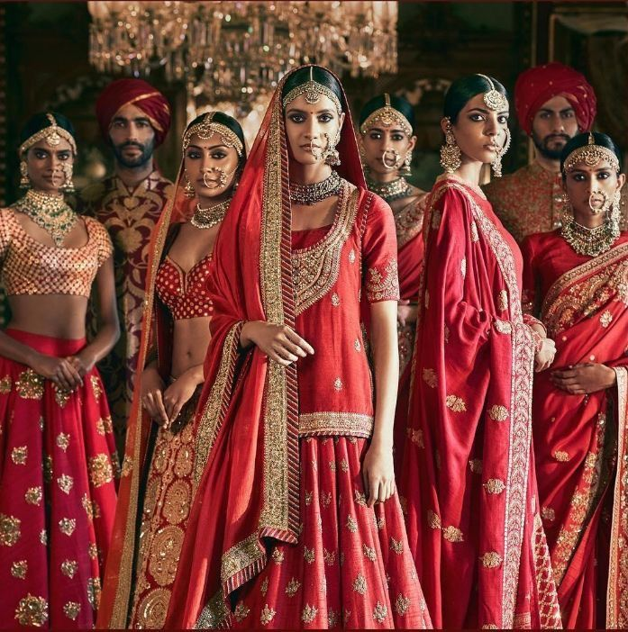

Maldives

Destinations
{kind=link}
{kind=link}
{kind=link}
{kind=link}
Related Photos
{kind=link}
{kind=link}
{kind=link}
History

style="font-weight: 400;">The Maldives were inhabited as early as 1,500 BC, but much of the country’s origin is lost in tome due to lack of surviving written records. Large ruins and other archeological remains were found on islands which shows that the people of antiquity had certainly stumbled upon the country during their first travels. It is believed that immigrants by Aryan from Indian landmass permanently settled in around five hundred B.C. Numerous traditions, customary practices, and superstitious beliefs still prevail country likewise validate the impact of the early Dravidian culture of the Maldives. It is acknowledged that early Maldivians were Buddhists or Hindus migrating from the Indian landmass. Cowrie shells were used as a form of currency in the early period. Historical accounts of travelers revealed that they were traded in the 13th century. A single gold dinar was worth 400,000 shells.
The Maldivian language (Dhivehi) has its own script called Thaana that displays both an Abugaida and a true alphabet principal. The language is a bit similar to Sanskrit, Sinhalese and Arabic. The Maldivian food is mostly a natural blend of varietals. The most popular and refreshing drink is coconut juice or Kurumba. The popular dishes are mostly made with Tuna and reef fish, and a mixture of curries and spices from initial influence main Maldivian. Maldivian clothing is preferred to be cotton due to the tropical weather. Men traditionally wear sarongs wrapped around the waist with long sleeved shirt. And women wear what is called libaas, which is usually adorned with gold or silver threads, and the best ones are hand stitched. {kind=link}
Easy on the HDR buddy.
I love The Maldives.